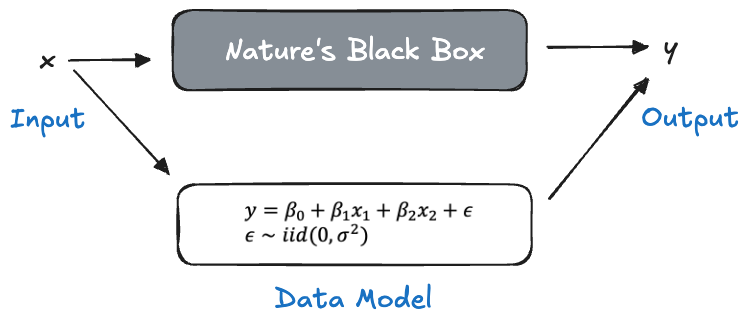
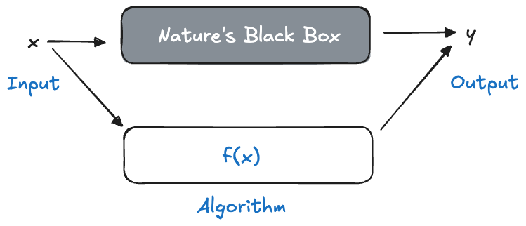
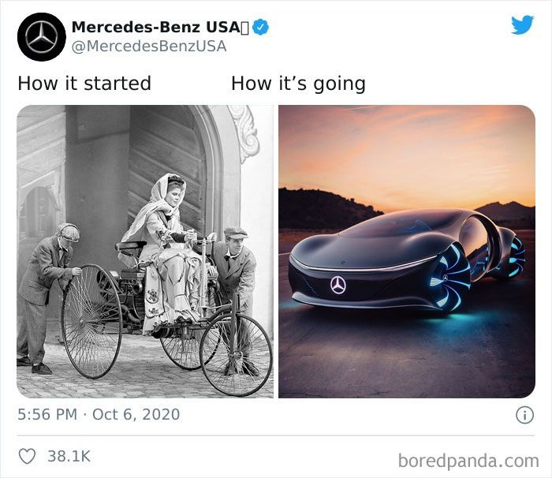
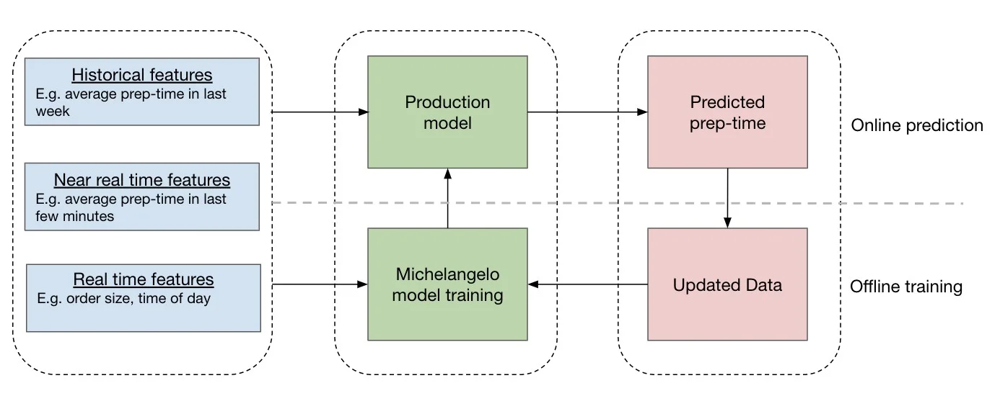

2 History and Evolution
Quote
Not enough of our society is trained how to understand and interpret quantitative information. This activity is a centerpiece of science literacy to which we should all strive—the future health, wealth, and security of our democracy depend on it. Until that is achieved, we are at risk of making under-informed decisions that affect ourselves, our communities, our country, and even the world.
2.1 What is Data Science?
There is no single agreed-upon definition of data science. Attempts to pin down what it is invariably make references to mathematics, statistics, and computer science, and involve subject matter experience to varying degrees. The lack of a single definition is at once understandable and revealing.
Data science is a young discipline, its boundaries–what is in and what is out—are still evolving.
Data science is a cross-functional discipline that combines domain expertise with foundations in statistics, mathematics, and computer science. Views of data science differ based on how these components are weighted.
Data science is defined by its activities—by what data scientists do. This encompasses finding data, handling data, processing data at scale, to applying statistics and machine learning, to writing code and implementing algorithms to interpreting, visualizing, and communicating data and results.
We can begin to develop an understanding of data science by considering the three foundational disciplines: statistics, mathematics, and computer science. What problems associated with data required their combination and could not be solved by the discipline in isolation? Maybe we should put the question slightly differently: What problems are we able to solve at the intersection of these disciplines?
First, data is information collected about the real world. Data science then is concerned with real-world problems and phenomena. We test hypotheses about real-world problems, but we do not solve hypothetical problems or prove theorems. Typical questions addressed by data scientists based on data and the types of analysis invoked to answer the question are shown in Table 2.1.
| Type of Analysis | Type of Question |
|---|---|
| Description | What is and what has been? |
| Prediction | What will be? |
| Classification | What category does this item belong to? |
| Hypothesis Testing | What can I say about X? |
| Prescription | What should I do? |
| Clustering | Which things are similar? |
| Association | Which things occur together? |
| Optimization | What is the best way to do something? |
| Generation | What novel content is there? |
Statistics is concerned with describing the world and with drawing conclusions about the world using incomplete information. The information—data—is incomplete for various reasons. We might have drawn a sample from a population rather than observed every entity. We might have assigned treatments at random to subjects in an experiment in order to balance out the influence of variables not controlled in the experiment. We have incomplete information about the input variables that relate to an output variable. We have incomplete information about the true relationship between inputs and outputs.
Computer Science is concerned with computation, information, and automation. Key to computer science are data structures—efficient ways to store and process information—and algorithms—specifications to solve a specific problem through computation. Because today data is almost always stored in digital form it is now immediately accessible to processing via computation. A remarkable contribution of computer science to data science over the last decades is to broaden its view from methods and algorithms to organize and store data to methods and algorithms that draw conclusions from the data through computation. Computer science has discovered data as a source of learning, not just as a medium of storage and processing.
The algorithmic approach to understanding data rather than a probabilistic approach is one of the great contributions of computer science to data science. Another major contribution is software engineering and software development. Data science projects are software projects, they involve the use of software tools and create code written in languages such as Python, SQL, R, Julia, Scala, Java, JavaScript, and others.
Mathematics is concerned with the study of numbers, formulas (algebra), shapes and structures (geometry), and patterns (analysis). Statistics is often considered a form of applied mathematics. Relationships between inputs and outputs in data science are often modeled through continuous functions, their properties are studied through linear algebra, and they are related to data through differentiation, integration, and numerical analysis.
Definition: Data Science
At the intersection of the foundation disciplines, performing data science means drawing conclusions from data about real-world problems using computation and automation in the presence of uncertainty.
Performing data science is refreshing and challenging. Refreshing because the focus is on solving real-world problems by applying tools from statistics, mathematical modeling, and machine learning—rather than proving lemmas and theorems. Refreshing because the work transcends ideological boundaries. Frequentist and Bayesian approaches, data models and algorithmic models, visual and numerical techniques, they all compete to get the job done—nothing is a priori off the table because of one school of thought or another. Performing data science is challenging because you have to command a large and expanding tool set across the foundation disciplines. Challenging because at the intersection of those disciplines unique challenges arise. For example, data science projects involve writing software. While we can learn a lot from traditional software engineering projects, software developed in data science project has to deal with the challenges of a variable, uncertain material: data. Challenging because hard technical skills are not sufficient to being a great data scientist.
Rather than thinking of data science as a new domain of knowledge, we think of it as a set of skills that are applied to a subject matter domain (=area of expertise). This view is informed less by a single scientific discipline around data than the recognition that today all subject matter domains, including the sciences, are using data to answer questions.
Which skills are most important? Is it the hard technical skills in statistics, machine learning, software development? Is it the ability to communicate across organizational functions in a team-based environment? Or is it the ability to understand and analyze real-world problems in a specific domain? To become a great data scientist you will eventually need to acquire all those skills.
Subject matter skills can be acquired by working in a particular domain. Working on data science problems in financial services, for example, you will pick up the specifics and idiosyncrasies of credit and debit card transactions, anti-money laundering, electronic payments, and so on.
Domain-specific knowledge takes the least time to learn to contribute to solving data science problems. Learning the statistical and mathematical foundations and how to develop good software is the more difficult task. When you join an organization as a data scientist, you will be surrounded by people who understand the domain inside and out—it is what they do. You, however, might be the only person who understands how to apply machine learning to forecast data and who knows how to write analytical software that works.
2.2 The Sexiest Job and John W. Tukey
In 2009, Hal Varian, Chief Economist at Google declared that the sexy job in the next ten years would be statisticians. As a statistician, I agreed of course. In 2012, Thomas Davenport and DJ Patil published “Data Scientist: Sexiest Job of the 21st Century” in Harvard Business Review (Davenport and Patil 2012). These articles were not describing the work of the typical statistician, but a more general approach to extracting information from large data sets and presenting the insights to others. A new kind of profession was emerging in response to a greater abundance of data in the world that did not fit neatly into existing categories like mathematician, statistician, business analyst, or “quant”. Varian said,
The ability to take data—to be able to understand it, to process it, to extract value from it, to visualize it, to communicate it—that’s going to be a hugely important skill in the next decade
The approach seemed fresh in placing the data at the center of the investigation rather than the traditional approach of choosing the problem first and collecting data second to answer the problem. It emphasized learning from data through visualization and communicating about data—data literacy. What can we learn from the data we have, what do the data tell us? Alas, this shift in focus was not new, it was first proposed by a famous statistician, John W. Tukey.
Rant: Data and Datum
You might have noticed that data is used in the plural form, “data are…”. This is grammatically correct since data is the plural form of datum. It is common to use data as a singular noun, “data is…”. I might fall into that trap every now and then but prefer to use the plural form. After all, using data as singular would be wasting a perfectly good noun: datum.
I recognize fighting a losing battle.
John Tukey
Tukey is known to statisticians as the founder of exploratory data analysis (EDA), as compared to confirmatory data analysis. His famous book “Exploratory Data Analysis” (Tukey 1977) established the idea that much can be learned by using the data itself and that data can suggest hypotheses to test. In confirmatory analysis, on the other hand, you start with a hypothesis and then collect data to verify whether the hypothesis might be true.
Much of the statistical work leading up to this point had been confirmatory, based on the concept that data are the realization of a data-generating mechanism—usually a random process. Hypotheses are tested by capturing this mechanism in a statistical model, deriving estimates for the parameters of the model. Once the statistical model is accepted as the abstraction of the data-generating mechanism it becomes the lens through which the problem of interest is viewed. The model is applied to test hypotheses and to calculate predictions along with measures of uncertainty.
In 1962, John W. Tukey published a pre-cursor to EDA, “The Future of Data Analysis”, in which he laid the foundation of modern data science, he called it data analysis, and argued why this is a scientific discipline (Tukey 1962).
For a long time I have thought I was a statistician, interested in the inference from the particular to the general. But as I have watched mathematical statistics evolve, I have had cause to wonder and to doubt.
All in all, I have come to feel that my central interest is in data analysis, which I take to include, among other things: procedures for analyzing data, techniques for interpreting the results of such procedures, ways of planning the gathering of data to make its analysis easier, more precise and more accurate, and all the machinery and results of (mathematical) statistics which apply to analyzing data.
Tukey asked that we give up familiar constraints and look for stories and meaning in data sets. Data analysis can precede probability models; for example, one can identify an interesting function of the data and make progress by asking what the function might reasonably be estimating.
This was a liberating view that contrasted against the rigor of probability models and the search for optimal estimators in favor of putting the data first, accepting “good enough”, giving advice when there is reasonable evidence for the advice to be sound, and being prepared that in a reasonable fraction of cases that advice will be wrong.
Data analysis must progress by approximate answers, at best, since its knowledge of what the problem really is will at best be approximate. Far better an approximate answer to the right question, which is often vague, than an exact answer to the wrong question, which can always be made precise.
2.3 Data Mining and Data Science
Data mining is the process of searching large data sets for trends and patterns using computers and automation. We can see a direct link to data analysis in the sense of Tukey, working with a data set to extract interesting patterns in data, to discover new information in the data, to classify observations, identify associations, detect outliers or anomalies, and to identify groups of similar observations (clustering).
With the dramatic growth of tabular data sets organized in rows and columns, it became impossible to conduct this type of exploratory discovery (in the sense of Tukey) manually. There was also growing interest in using special tools and algorithms to discover hidden nuggets of information and relationships in data sets that would otherwise go undetected. Data mining relies on computing power and automation to find patterns in data at scale.
The overall process of discovering knowledge from data was formalized as Knowledge Discovery in Databases (KDD). Data mining is the part of the KDD process that uses algorithms to discover patterns.
This approach is not without problems or critics. The statistical viewpoint likened the approach to “data dredging” or “data fishing”: looking for relationships even if they are meaningless and then forming hypotheses about why the relationships exist. For example, associations and correlations can be spurious, caused by latent or mediating variables. A strong correlation is not evidence of a causal relationship and might lead to the formulation of bad hypotheses or poor decisions.
Example: Chocolate Consumption and Nobel Laureates
Messerli (2012) published in 2012 in the New England Journal of Medicine an article that relates the chocolate consumption per capita to the number of Nobel prize winners in various countries, a highly significant statistical relationship that explains almost 2/3 of the country-to-country variation in Nobel laureates (Figure 2.1).
{kind=link}
If the relationship were causal—which it is not—an increase of 0.4 kg per year per capita would produce one additional Nobel laureate. In the U.S. that amounts to an extra 125 million kg of chocolate per year. If the relationship between chocolate consumption and number of Nobel laureates is not causal, how can we then explain the obvious relationship seen in the figure? Could it be explained by chocolate consumption improving cognition which creates a fertile ground from which Nobel laureates sprout? A look at how the data were collected sheds light and casts doubt on the study: only four years of chocolate consumption were considered on a limited number of chocolate products and no data prior to 2002 was used. The number of laureates is a cumulative measure that spans a much longer time frame.
It appears that the data were organized in such a way as to suggest a relationship between the variables.
Another criticism of the data mining approach is that traditional statistical decisioning based on \(p\)-values is not adequate. Many statistical tests are overpowered by very large data sizes, making even small differences statistically significant. The repeated application of statistical tests across hundreds or thousands of variables leads to inflated error rates unless multiplicity adjustments are made.
Example: Market Basket Analysis
Market basket analysis uses Association Rule Mining (ARM) to find associations between items that occur in databases. An application is to identify items that are purchased together, for example, customers who buy whole milk might be more likely to also purchase yogurt and cereals as compared to a completely random choice of products.
The name market basket analysis stems from this application, but ARM has many other use cases. Association rules can be used in diagnosing medical conditions based on co-occurrence of symptoms, in text analytics to extract meaning of documents based on the co-occurrence of words, in survey analysis to find associations between answers to different questions, and so on.
A rule is represented as a logical \(\{A\}\Rightarrow\{B\}\), where \(\{A\}\) is a set of items called the antecedent (head) of the rule and \(\{B\}\) is a set of items called the consequent (body) of the rule. ARM discovers rules such as \(\{\text{whole milk}\}\Rightarrow\{\text{yogurt, cereals}\}\) and arranges them by measures of rule quality such as support, confidence, coverage, and lift.
The support of an item set is the frequency with which its items appear, the confidence is a measure of predictability of the rule, and the lift measures how much more likely the item set appears compared to a random allocation of items.
When applied to large databases the number of possible association rules is astronomical. Suppose there are 500 items in a store. There are more than 62 million rules with just two items in the antecedent and a single item in the consequent. If all associations between items are completely random, at a 1% Type-I error rate we would declare over 600,000 associations as “significant”.
This criticism is valid, of course, if the results of data mining are used in a confirmatory fashion. But when one puts data first, not a probability model that might have created the data, then data mining techniques are incredibly useful and necessary to help us learn about data, to formulate hypotheses, and to plot the path of inquiry—rather than to confirm a result. Data mining is part of the data science methodology and not a separate discipline. The Data Science Process Alliance, concerned with project management in data science, uses the cross industry standard process for data mining (CRISP-DM) as the foundation for the data science process; data mining and data science today are intertwined.
2.4 2001: An Odyssey
Two influential papers appeared in 2001 that paved the way from statistics to data science.
In “Data Science: An Action Plan for Expanding the Technical Areas of the Field of Statistics”, William S. Cleveland makes the case to enlarge the major focus areas in statistics to a field called data science (Cleveland 2001). The new discipline places more emphasis on
- Multidisciplinary projects. Collaboration with domain experts is a source of innovation. Data is the engine for invention in data science.
- Model building. Effort should increase toward methods for building models compared to formal, mathematical-statistical inference in models.
- Computational methods and computing with data that includes databases, networks, and analytical software.
- Communication and pedagogy.
Two Cultures
In “Statistical Modeling: The Two Cultures”, Leo Breiman contrasted statistical (data) modeling and algorithmic modeling (Leo Breiman 2001b). The former assumes that the data are generated by a stochastic data model. If we accept the data model as an abstraction of nature’s mechanism, then conclusions about nature will be based on the model. The data model becomes the lens through which we interpret the world.

Figure 2.2 depicts how a multiple linear regression (data) model is used to illuminate nature’s black box. We try to understand how inputs \(\textbf{x}\) are transformed by nature into the output \(y\). The black box is replaced by the following data model: the data \(Y_1,\cdots,Y_n\) are generated from a distribution with mean \(\beta_0 + \beta_1x_1 + \beta_2x_2\) and variance \(\text{Var}[Y_i] = \sigma^2\).
Many assumptions go into this stipulation:
- only \(X_1\) and \(X_2\) are required to capture the relationship between inputs and output.
- the relationship between \(Y\) and the \(X\)s is linear in the parameters \(\beta_0, \beta_1, \beta_2\).
- the outputs have the same variance \(\sigma^2\) (homoscedasticity assumption).
- the model is correct for the expected value of \(Y\), in other words, the error disturbances \(\epsilon\) have mean zero.
- the data are identically and independently distributed (iid assumption), for example, there is no stochastic dependency between \(Y_i\) and \(Y_j\).
These are strong assumptions but we can employ goodness-of-fit statistics and residual diagnostic plots to determine whether the assumptions hold. If so, we accept the model
\[ \begin{align*} Y &= \beta_0 + \beta_1 x_1 + \beta_2 x_2 + \epsilon \\ \epsilon &\sim (0,\sigma^2) \end{align*} \] as the representative placeholder of nature’s black box.
According to Breiman, 98% of statisticians subscribe to this approach.
Algorithmic modeling, on the other hand, makes no assumption about the underlying data model, considers nature’s mechanism as an unknowable black box and asks the simple question: which algorithm performs well to predict \(Y\) from \(\textbf{x}\)?

Are we making a mountain out of a molehill here? Is the approach in Figure 2.3 really that different from Figure 2.2? The differences are subtle and important. In the absence of a data model we cannot check the observed data against the assumptions of the model. So what if we choose an algorithm in Figure 2.3 and the residuals suggest heteroscedasticity (unequal variance)? We made no assumption about the variance in the data. Why worry about a Q-Q plot to test for Gaussian distribution when that is not an element of the algorithm? The question of whether the data model applies is replaced with the question of whether the algorithm works. The important measure of model performance in algorithmic modeling is thus not goodness-of-fit but the prediction accuracy for future (new) observations—the generalization error.
Algorithmic modeling is more common in fields outside of statistics. In Breiman’s words
Perhaps the damaging consequence of the insistence on data models is that statisticians have ruled themselves out of some of the most interesting and challenging statistical problems that have arisen out of the rapidly increasing ability of computers to store and manipulate data. These problems are increasingly present in many fields, both scientific and commercial, and solutions are being found by nonstatisticians.
Machine learning, as it emerged from computer science, is a manifestation of algorithmic modeling.
In data modeling, theory focuses on the probabilistic properties of the model and of quantities derived from it. The adequacy of a model is judged by goodness-of-fit statistics and residual analysis. Breiman criticized that data modeling has become too pervasive in statistics and the data model turned into a template for analysis. Every problem is tackled by first developing a model based on a data-generating mechanism. Many practical problems escape this formalization. What is the data model for ozone concentration in the atmosphere, or the time to adjudicate a criminal trial?
In algorithmic modeling, the focus is on the properties of the algorithm itself: starting values, optimization, convergence behavior, parallelization, hyperparameter tuning, and so on. The measure of model quality is how well it predicts future (new) observations, that is, how well the model generalizes to unseen cases. In data modeling the measure of quality is how well the data agrees with the model assumptions. The problem with this approach is that goodness-of-fit is difficult to test, and that there is typically not one model that clearly outperforms the rest. There are many models that perform similarly (equivalently) but that can lead to very different conclusions about the importance of individual predictors.
Breiman’s article was widely discussed—the invited comments by leading statisticians at the end of the paper give a sample of opinions.
Meanwhile, computer scientists had realized that data is not just an abstract concept, that data is more than information to be structured, stored, secured, and transmitted. They realized that data had intrinsic value; processing data can derive insight from data. That knowledge filled a void left by statisticians with limited knowledge of computing environments. Computer scientists, on the other hand, had limited knowledge about how to approach the analysis of data. The fields were ripe for a merger.
There is no right or wrong between data modeling and algorithmic modeling. Both have advantages and disadvantages. If you cannot reasonably articulate a stochastic process that could have generated the data, then data modeling does not make much sense. And if the goal of analysis is confirmatory inference and hypothesis testing, then you better have a data model that captures the stochastic influences on the target variable. If you are interested in predicting or classifying observations, why choose models according to \(R^2\) or residual plots if what matters is whether the model can predict a new observation well? If a model does not explicitly account for sources of uncertainty, it cannot articulate uncertainty in its estimates.
Data models make probabilistic assumptions that need to be checked, but algorithmic models are not free of assumptions either. A neural network makes no distributional assumption about the data but it makes assumptions about how the relationships between inputs and outputs can be represented mathematically. A support vector machine for classification makes no assumption about the distribution of the data but it assumes that the classification rule obeys a certain mathematical structure (hyperplane separability).
Leo Breiman was a probabilist and statistician in academia before he went into statistical consulting. This experience turned a data modeler into an algorithmic modeler. He invented a number of algorithmic modeling techniques, among them classification and regression trees (CART, L. Breiman et al. (1984)), bagged trees (Leo Breiman 1996), and random forests (Leo Breiman 2001a). Bagged trees and random forests belong to the class of ensemble techniques where the overall analysis gains strengths by combining weaker base methods or by sequentially improving (boosting). They are among the most effective prediction and classification approaches for many data problems. It has been argued that those methods could not have been developed with a purely statistical mindset where a single, carefully crafted, data model has greater currency than the use of many, individually suboptimal, models.
2.5 The Big Data Era
An early use of the term Big Data was in a 1997 paper by Michael Cox and David Ellsworth in the Proceedings of the IEEE 8th Conference on Visualization (Cox and Ellsworth 1997). The authors noted that data set sizes have grown bigger to the point that they do not fit in main memory and termed the problem big data.
Did we really need another term to describe increasing data size? Whether data fits into main memory of a computer depends on the size of the data and the size of the memory. And since the invention of digital computers both have constantly increased. There had to be more to it than just an increase in the volume of data.
Indeed, in the 2000s a new class of applications and uses of data emerged as several developments in data and computing coalesced:
- More and more data were now captured in digital form, the amount of data generated in digital form increased sharply.
- A growing interest in the analysis of rich data types such as text, documents, audio, and video.
- A continuum of data in motion; from data at rest in the cloud or data center to s treaming data.
- Large-scale data collection enabled through the internet.
- A shorter shelf life of new kinds of data such as behavioral data (online shopping, social media activity, web browsing, behavioral data) compared to more stable demographic data (age, ZIP code).
- The beginnings of data-driven application where the data defines how the system operates.
- Greater automation of data-processing.
The Big Data phenomenon was never just about the size of the data alone, or even the “3Vs”, volume, velocity, and variety. Big Data was about doing something different with data than had been done before, using different data types, different model types, different algorithms, and different computing environments. Building a recommendation system at Netflix or Amazon from data on millions of customers and items viewed or bought is an example of this new type of applications.
Big Data was about reaching the limits of the ability to store, access, and process data. The volume of data can be a limiting factor, of course and can call for specialized approaches. Traditional statistical modeling with hypothesis testing might be useful when deciding about 20 possible input variables. What happens when there are 30,000 potential input variables? Computing \(p\)-values in a random sample of size 100 makes sense, but when the data set contains 10 million observations the statistical test is so powerful that nearly any hypothesis can be rejected. What should be used instead? How do you engage multiple computers to solve massive analytic problems in parallel?
If the definition of Big Data is “whatever does not fit on a single machine” and needs some form of distributed computing, then the frontier is continuously receding. Today (2023), a storage-optimized instance in the Amazon Elastic Compute Cloud (AWS EC2, i4g.16xlarge), features 64 cores (vCPUs) and 512 GB of memory. AWS launched EC2 in 2006 with single-core machines that featured 2 GB of RAM. That is an increase of more than two orders of magnitude. And, in case that is not powerful enough, p5.48xlarge instances feature 192 cores and 2 TB of memory. A lot of Big Data work can be done on a single machine today.
Jordan Tigani, CEO and founder of database company MotherDuck and founding engineer of Google BigQuery has captured this development in the blog “Big Data Is Dead” (Tigani 2023):
The world in 2023 looks different from when the Big Data alarm bells started going off. The data cataclysm that had been predicted hasn’t come to pass. Data sizes may have gotten marginally larger, but hardware has gotten bigger at an even faster rate. Vendors are still pushing their ability to scale, but practitioners are starting to wonder how any of that relates to their real world problems.
Of course, just because the amount of data being generated is increasing doesn’t mean that it becomes a problem for everyone; data is not distributed equally. Most applications do not need to process massive amounts of data. This has led to a resurgence in data management systems with traditional architectures.
The amount of data an organization stores is typically much greater than the amount of data being analyzed: more recent data is more important, data are processed prior to analytics, and so on.
Whatever we think of the term Big Data, the era has contributed to the rise of data science as a discipline. New data-driven applications with new types of data challenged us to approach data analytics in a new way. Algorithmic approaches that put the problem first (I need to predict customer churn) are winning in this environment over data modeling approaches that first build an abstraction of the data mechanism based on probability principles.
2.6 Data Science Today
Our approach to learning from data is neither purely statistical or purely algorithmic. It is a combination of statistical modeling and machine learning that is aptly termed statistical learning. It embraces model with a foundation in probability and uncertainty thinking and it embraces algorithmic approaches to learning from data. The generalization error, captured by mean squared prediction error, mean absolute error, classification accuracy, specificity, sensitivity, and other metrics based on a test data set or cross-validation, is a key quantity in judging models. However, diagnostic measures, \(p\)-values, and goodness-of-fit metrics also play an important role.
In other words, we seek to combine the strengths of data modeling and algorithmic modeling, where possible. The software used in data science takes such an inclusive approach and blends the schools of thoughts. Regression modules in machine learning are used to derive predictive equations but report \(p\)-values and likelihood-based statistics (BIC, AIC) which require distributional assumptions.
The people who identify as data scientists often have unusual career paths; they do not necessarily come to data science through one of the foundational disciplines. They turn out to be problem solvers with an acumen for technology, programming, and communication.
Big Data created an epic wave and data scientists are the people who know how to surf. Thanks to the Big Data wave, tools and techniques to process and analyze large and complex data sets are now standard in data science. Knowledge in data storage, parallel computing, distributed systems, scalable data processing frameworks, and cloud computing is part and parcel of data science.
Ten years after they published “Data Scientist: Sexiest Job of the 21st Century”, Thomas Davenport and DJ Patil revisited in a 2022 Harvard Business Review article whether the assessment still holds (Davenport and Patil 2022). They conclude that over the last 10 years there has been continuity in the developments but also important changes.
The job of the data scientist continues to gain importance as the amount of data, analytics, and AI in business, government, and society is bound to only increase. A decade ago, the data scientist was a unicorn who combined rare skills in statistics, machine learning, and coding to wrangle information from large data sets. Thanks to many graduate and undergraduate programs, online courses and certifications, there is today a more structured approach to acquire data science skills. While these skills continue to range widely, there is also more differentiation of the data scientist role against other professions. In response to specialization and the need to fill a gap in managing data in the data science project lifecycle, AI engineers, ML engineers, and data engineers are on the rise. In the words of Davenport and Patil:
We expect to see continued differentiation of responsibilities and roles that all once fell under the data scientist category. Companies will need detailed skill classification and certification processes for these diverse jobs, and must ensure that all of the needed roles are present on large-scale data science projects. Professional data scientists themselves will focus on algorithmic innovation, but will also need to be responsible for ensuring that amateurs don’t get in over their heads. Most importantly, data scientists must contribute towards appropriate collection of data, responsible analysis, fully-deployed models, and successful business outcomes.
Among the important changes in technology in the past decade the authors list
- Cloud computing and cloud data storage (data lake, data warehouse, lakehouse)
- Auto machine learning and citizen data science
- Large language models
- Model operations
- Ethics of data science
Twenty years after the arrival of Big Data, data science continues to evade a precise definition because it is defined by those who practice it, rather than by a list of activities. Hacker’s art, statistics, programming, visualization, modeling, subject-matter experience, and communication to solve problems with data through computation are key ingredients. Data science will continue to evolve as its ingredients change and with the emergence of new methods and tools. Most recently, since late 2022, large language models based on transformer technology created a sea change in natural language understanding that is believed to disrupt many occupations. Data scientists embrace such disruptions to draw better conclusions from data.
2.7 Data Science and Data in Science
The majority of data science projects and applications take place in non-academic settings, often lumped together under the generic term industry. Most data science jobs are thus found in industry.
There is a difference between data science in research settings and commercial settings. The boundaries typically align with academia and industry, but it is not unusual for commercial enterprises to have Research & Development divisions that engage in scientific research in support of the enterprise’s mission and products.
Rather than pitting industry against academia, consider how data science projects differ between research and commercial settings. There is a lot of hype about how organizations become more data driven, replacing decisions made on gut feeling with hard evidence based on data—the data science team is at the heart of that digital transformation, disrupting the old ways of doing business with novel approaches based on machine learning and AI. In most situations, it is just that: hype.
In research and commercial settings, the goal is to provide value through using data. How that value is measured is fundamentally different. Research adds value by increasing our body of knowledge. Commercial enterprises are interested in increasing the value of the company.
Most data science jobs in commercial settings exist not to disrupt the business model but to support an existing business by solving the current data-related problems. The problems tend to be narrow and specific with result metrics that are tied to the objectives of the enterprise. Objectives such as “increase revenue”, “retain customers”, “increase productivity”, “reduce cost” are universal and boring. Because questions are not open ended and the time to find a solution is of the essence, there is a tendency to reuse rather than to develop new approaches and/or algorithms. Solutions have merit if they meet the goals and can be implemented; they must make a difference in the practice of the business.
In research settings, on the other hand, questions are more open-ended without a clear solution path. The goal of research is to find answers to new questions. Time is allotted to deep thinking and to uncovering mechanisms. This often involves novel approaches, custom algorithms implemented by the research team in specialized software. Solutions are developed only as necessary to prove the result of the research. They do not have to be implemented or practical. A research team might find a better active ingredient to fight disease and leave the task of developing the drug into a product to someone else.
Research projects have carefully designed protocols about data, what data to use, how to measure attributes, how to sample observations. Experiments are designed to collect data under controlled conditions in order to draw cause-and-effect conclusions.
In commercial settings you are more likely to work with the data that is collected as a by-product of the normal business operations. True experimentation with data collected under controlled conditions is rare, sometimes confined to A/B testing of one data product against another. It is thus common in commercial situations to be working with data that were collected for a different purpose. The data in the enterprise CRM (customer relationship management) system was collected to track interactions with customers, the data in the Salesforce instance tracks revenue opportunities, and ServiceNow records IT assets and tickets. Is that the best data to optimize digital marketing campaigns? Probably not. Weak correlations, low signal-to-noise ratios, poor data quality are common problems.
It is not the goal of this section to put a damper on working as a data scientist in commercial enterprises. It is a good idea to ask what role data and software play in the organization and what the core business issues are. If the core business and the core product is built on data and software, then it is likely that data science contributes directly to the mission and the bottom line of the company—it is essential to the business. In many organizations the core business is not built on data and technology—at least not yet. A bank’s core business is to deposit and lend money. A retailer’s core business is to sell goods. An insurance’s core business is risk assessment and underwriting. Data science supports the core functions through traditional data functions such as reporting, data analysis, forecasting—it is important but not essential. Increasingly, however, these core functions are becoming the focus of data science itself providing a fertile ground for interesting and novel approaches: micro-lending (banks), recommendation systems (retailers), reinforcement learning for underwriting (insurance). At this point data science helps transform a traditional business model as its products become essential to operating the business.
Understanding the core business is also important to realize what you are expected to optimize for. Take, for example, a financial services business that offers loans. A classification model that groups potential customers into those who pay back their loans on time and loan defaulters will make two potential errors: some customers will incorrectly be classified as defaulters and might not receive a loan offer; some customers will be incorrectly predicted to pay back the loan but end up defaulting. Personally, you might want to optimize the data science model to minimize the error of the first kind, making sure that more customers receive loans. The enterprise has a different attitude, trying to minimize giving loans to individuals or companies who fail to pay them back. The organization makes the rules.
2.8 Case Studies in Data Science History
We close this chapter with a look at two data science problems. The first is an investigation into the cholera outbreak in 1854 Soho, London. The second examines the complexities of predicting time to cook and deliver in the real-time Uber Eats application of 2019. It fits the “How It Started—How It’s Going” meme.

Cholera Outbreak in Soho, London, 1854
Thanks to data visualization and data analysis the consequences of the 1854 cholera outbreak in Soho, London, was much less severe, saving lives. The investigation also helped establish the causal link between cholera and water contamination, decades before the bacterium that causes cholera was identified. One of the main characters of our story is John Snow.
Two Snows
In 1854, a severe outbreak of cholera occurred near Broad Street in Soho, London, killing over 600 people. The outbreak was studied by John Snow, considered one of the founders of modern epidemiology. No, not the Jon Snow you might be thinking of, Lord Commander of the Night Watch in Game of Thrones (Figure 2.4 (b)), but the gentleman in Figure 2.4 (a).
Visualization
Figure 2.5 shows the map drawn by John Snow, recording the number of cholera cases with stacked bars at the location where cholera cases occurred (click on the map to zoom in). Also shown on the map as black circles and annotated as “PUMP” are the public water pumps throughout the city. The high number of cholera cases on Broad Street stands out, and they seem to be clustered near the location of the Broad Street Pump (Snow 1855, 46).

Cholera had been a major problem in the city, thousands had died during previous outbreaks. The prevailing theories of the cause of cholera were (i), airborne particles, called miasma that rose from decomposing organic material and (ii), an as of yet unidentified germ. According to the miasma theory, cholera is contracted by breathing bad air. John Snow adhered to the germ theory and believed that it was transmitted through contaminated water.
Data validation
Talking to residents, Snow identified the public water pump on Broad Street to be the source of the outbreak. He failed to identify the germ under the microscope but came to the conclusion based on the pattern in the data and conversations with residents. Investigating on the ground, he found that nearly all deaths were in the vicinity of the Broad Street Pump or by people who had consumed water from the pump (Snow 1855, 47):
It will be observed that the deaths either very much diminished, or ceased altogether, at every point where it becomes decidedly nearer to send to another pump than to the one in Broad street. It may also be noticed that the deaths are most numerous near to the pump where the water could be more readily obtained.
He persuaded local authorities to remove the handle from the pump to prevent access to the water. The mortality rate declined after that, but it is believed that the outbreak was already in decline as people had fled the area.
Removing the handle
“Removing the handle” is now a term in epidemiology for the removal of a harmful agent from the environment. When epidemiologists look for simple answers to questions about epidemics, they ask “Where is the handle to this pump?” (Adhikari, DeNero, and Wagner 2022).
There were some data points (outliers?) that did not agree with the hypothesis that proximity to the Broad Street pump resulted in more cholera incidences. At the intersection of Broad Street and New Street was the Lion Brewery; there were no cholera cases at the brewery although it used water from the Broad Street pump. It turns out that the workers there were protected from cholera by virtue of a daily beer allowance. The cholera bacteria is killed in the brewing process making the beer safe to drink. Drinking beer instead of the contaminated water saved the workers from cholera. What appears as an outlier to the model actually reinforces it.
Adhikari, DeNero, and Wagner (2022) discuss other data points that appeared initially as anomalies and ended up supporting Snow’s theory and implicated the public pump on Broad Street:
There were deaths in houses closer to the Rupert Street pump than the Broad Street pump. It was more convenient for those residents to use the Broad Street pump due to the street layout.
Deaths in houses several blocks away from the Broad Street pump were linked to children who drank from the Broad Street pump on their way to school.
John Snow was initially puzzled by two isolated deaths in the Hampstead area, far from Soho. He learned that the deceased had once lived in the Broad Street area. Because they liked the taste, they had water from the Broad Street pump delivered to Hampstead every day.
The source of the contamination was ultimately determined to be a leak from a nearby cesspit into the well from which the Broad Street pump drew water. Clothing from a cholera patient had been discarded into the pit and leakage from the pit had contaminated the well.
Toward causality
The evidence that the contaminated well water at the Broad Street pump caused the high rate of cholera in that neighborhood and among those who consumed the water is strong. Is it conclusive, however? Have we ruled out any other explanation beyond a reasonable doubt?
There could be other explanations for the higher cholera incidence rate in the Broad Street neighborhood compared to other areas of London. Maybe the diet is different among the residents of that poorer area. Maybe their occupations expose them to harmful agents at work. Maybe there is something different in the way their houses were constructed.
While we know today that the bacterium Vibrio cholerae causes cholera, that discovery was not made until 1883 and John Snow had failed to identify a “germ” when he studied the Broad Street pump water. The prevailing miasma theory of infection from airborne particles also did not support Snow’s findings. While his data, visualization, and analysis showed a strong association between cholera and proximity to the Broad Street pump, a deeper analysis was necessary to convince his contemporaries.
To establish cause and effect and prove that a variable causes an outcome, modern science would design and run an experiment, provided that is ethically and technically possible. In such an experiment one would control for all other factors except the one hypothesized to cause the outcome. One method of controlling these confounding factors is by randomly assigning the conditions of interest to people and to observe what happens. Exposing folks deliberately to contaminated water that could harm or even kill them is not justified. Fortunately, John Snow found a real-life experiment with perfect conditions to establish cause and effect between cholera and water contamination.
He studied the cholera incidences among recipients of water from two water supply companies. The Lambeth company used water from the River Thames drawn upriver from sewage discharge and the Southwark & Vauxhall company drew water below the discharge. Snow also established that for all intents and purposes the households receiving water from either company were indistinguishable; in statistical terms they were comparable. The only thing that differentiated the two groups was the water supplier (Figure 2.6).
{kind=link}
Snow (1855, 75) wrote
In many cases a single house has a supply different from that on either side. Each company supplies both rich and poor, both large houses and small; there is no difference in the condition or occupation of the persons receiving the water of the different companies…
As there is no difference whatever either in the houses or the people receiving the supply of the two Water Companies, or in any of the physical conditions with which they are surrounded, it is obvious that no experiment could have been devised which would more thoroughly test the effect of water supply on the progress of Cholera than this, which circumstances placed ready made before the observer.
Snow was lucky to come across these observational data that he could analyze as if they were from an experiment where confounding factors were controlled through randomization. Real life had taken care of controlling those factors and varying only the water treatment—the factor of interest—between the two groups. Epidemiologists have since established criteria by which causation can be established in observational studies, called Hill’s criteria. More on this topic in Section 19.3.6.2.
Table 2.2 is based on Snow (1855, 80) and covers the period from January 1 to December 12, 1853 leading up to the 1854 outbreak. The cholera death rate on a per 10,000 house basis is almost 14 times higher in households supplied by the Southwark & Vauxhall water company compared to those who received their water from the Lambeth company.
| Water Supplier | No. of Houses | Cholera Deaths | Deaths per 10,000 Houses |
|---|---|---|---|
| Southwark & Vauxhall | 40,046 | 286 | 71 |
| Lambeth | 26,107 | 14 | 5 |
In all of London there were 563 deaths from cholera in the same period. In other words, 50% of the deaths took place among customers of the Southwark & Vauxhall company. Ouch.
For the first seven week period of the 1854 outbreak, Snow (1855, 86) recorded the death rates in Table 2.3.
| Water Supplier | No. of Houses | Cholera Deaths | Deaths per 10,000 Houses |
|---|---|---|---|
| Southwark & Vauxhall | 40,046 | 1,263 | 315 |
| Lambeth | 26,107 | 98 | 37 |
| Rest of London | 256,423 | 1,422 | \(55^*\) |
In statistical terms, such a difference in the death rates is highly significant, meaning that if there is no difference in the water quality between the suppliers, such a discrepancy would virtually never happen. The only reasonable explanation for the higher death rate, since differences between the groups receiving the water have been ruled out, is the quality (contamination) of the Southwark & Vauxhall water.
Case closed!
Predicting Time at Uber Eats, 2019
Fast forward 165 years from John Snow’s analysis linking water contamination to cholera.
In 2014, Uber launched Uber Eats, an online food ordering and delivery platform. Seven years later it serviced more than 6,000 cities in 45 countries. The business model of Uber Eats is known as O2O (online-to-offline), a strategy that integrates online and offline channels to provide customer experiences. You order food online, a physical restaurant prepares the meal, and Uber Eats handles the delivery to your door. Other examples of O2O business is to order items online and pick them up yourself in the store or to use a QR code that directs a shopper to online offers while they are in a physical store (offline-to-online).
Business Models
The classical business models are
B2B (business-to-business). A business sells goods and/or services to other businesses. For example, Salesforce makes software through which businesses manage sales operations. An individual consumer would not have a need for this software.
B2C (business-to-consumer). This is the most common business model in commerce and e-commerce where a business sells directly to the consumer. The grocery store is a B2C business, although they welcome businesses as customers.
C2C (consumer-to-consumer). Consumers transact directly with other consumers. Craigslist, eBay, and Etsy are examples of C2C e-commerce platforms.
C2B (consumer-to-business). Individuals provide products and services to companies. A freelancer developing web applications or designing graphics is an example of C2B business.
B2A (business-to-administration). Also known as B2G (business-to-government), is a model where companies transact with government agencies or public entities. Transactions involve long-term contracts that are subject to specific rules, policies, regulations, and procedures, and contain clauses that give the public entity special rights in the transaction (for example, termination for convenience).
The O2O commerce of Uber Eats is an example of the B2C model, a company selling products or services—delivering food—to customers.
An important part of the Uber Eats customer experience is time prediction. For the customer that means an accurate prediction of ETD, the estimated time of delivery. In order to calculate ETD, Uber Eats must combine the time to cook, pick up, and deliver the order. The time to cook is important to dispatch drivers so they arrive at the right time at the restaurant.
A major challenge in O2O business is that you do not control all the parties involved and there is no ground truth, historical data that you can fall back on. Uber Eats is not observing cooking times in the participating restaurants, the company does not control how busy the restaurants are or the amount of traffic. Yet without a solid handle on all time-dependent aspects of order fulfillment, the customers will not receive a reliable estimate of delivery time. As Wang (2019) describes it:
First, we need to set the right expectations by providing precise delivery time estimations in order to avoid frustrations in the case of delays. Next, we have to compute the perfect timing to send out delivery partners to pick up food. Ideally, they should arrive at the restaurant the moment food is ready. By arriving too early, they would take up the restaurants’ parking and dine-in spaces. On the other hand, arriving late will lead to unfavorable cooling of food. Therefore, time prediction is constantly playing a critical role across the order lifecycle.
Cold start
Initially, there was no data about cooking times and when food was available for pickup by the delivery partner. Uber Eats had to learn this data as it was running the business. So they started with fixed guesses to decide when to dispatch the delivery partner to pick up food. If they guesstimate that it takes 25 minutes until the food is ready (which itself is a function of preparation time and how busy the restaurant is, when they start preparing the order), and it takes the driver 10 minutes to get to the restaurant, they would dispatch the driver 15 minutes after the order was received.
Uber Eats used the same estimate for time to pick up for a given restaurant, regardless of the size or complexity of the order. Clearly, that was not going to work. As soon as they had gained some experience, they switched the system of guesstimates to training machine learning models that predict the time components of the order lifecycle.
Machine learning
Time prediction (time of food preparation, time of pickup, time of travel to customer) is key, not just for a good customer experience, but also to optimize the business. Which delivery partner to dispatch to a restaurant is a complex optimization problem. A greedy algorithm matches available drivers with restaurant locations only when an order comes in. This algorithm is optimal for a single order but not when you look at all the orders in an area. To support optimizing pickup and delivery across many orders you need to be able to predict the time to cook, pickup, and deliver very accurately.
For the delivery time, Uber Eats could fall back on the proven algorithms and methodology of the Uber ride-sharing business. However, it needed to augment the ETA predictions for food delivery via bicycles or walkers.
The big problem was predicting the time for food preparation. Nobody measured how long an order took in the restaurant. The restaurant was not obliged to record or report this data to Uber Eats. Many factors affect the time to cook: the size and complexity of the order, the busyness of the restaurant, the prioritization in the kitchen, staffing, etc. Without a good estimate of food preparation time, the business logic cannot dispatch a deliver partner at the best time. Dispatch too early and the driver waits at the restaurant until the food is ready. Dispatch too late and the food will not be as fresh as it could be.
The approach to develop good models for predicting cooking times used a three-pronged approach:
- Feature engineering based on the information that was available
- Increasing model accuracy by inferring the actual time for preparation
- Feedback loops for model retraining
Feature engineering
Features (input variables) for the model are based on (Wang 2019)
- historical data: average food preparation time over the past week
- near real-time data: average food preparation time in the last 10 minutes
- real-time data: time of day, order size, …
The use of real-time and near real-time data allows the model to adjust to quickly changing situations, for example, bad weather.
In addition to these inputs, Uber Eats used representation learning, a machine learning approach that identifies important features from the data itself. When applied to the restaurant menus, they were able to use natural language processing (word embeddings) together with clustering and classification methods to derive features that would be part of the real-time model inputs.
Inferred data
When a delivery driver arrives at the restaurant and the order is not already waiting for the driver, we can calculate the preparation time once the driver has the order in hand. GPS information from driver’s phones can be used to determine whether they are moving, arrived at the restaurant, or enroute to the customer. GPS data serves as a primary signal but is not specific enough to determine why a driver spends a long time at the restaurant. Are they looking for a parking spot? Are they waiting for the food? Are they trying to find the entrance?
By adding motion sensor data and activity recognition data from the phones, Uber Eats was able to train a machine learning model (conditional random field, CRF) to model the sequence of activities associated with the order delivery (Figure 2.7).

Feedback loop
With the sequence model the preparation times can now be inferred without setting foot in a kitchen. It is not an exact measurement of food preparation time, however. The inferred value is an approximation of the real, unobserved, time. When an order is completed, it is checked whether information is available to derive the actual preparation time. If so, the inferred value is updated with the actual value and will be used when the model is retrained in the future.
This creates a feedback loop where approximated data is replaced with validated values, improving the model accuracy over time (Figure 2.8). Michelangelo in Figure 2.8 refers to the in-house machine learning platform for online and offline model development and model serving at Uber. More on this platform and the offline and online model deployment options in Chapter 25.
